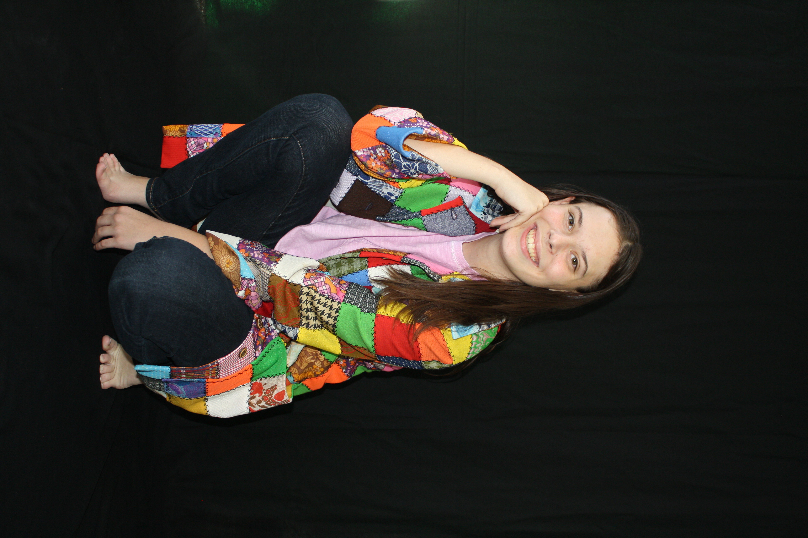

Jackalyn Cooper
Jackalyn Cooper is a graduating senior at the University of North Carolina at Charlotte, where she is earning a Bachelor of Arts in Theatre. Her work reflects a multidisciplinary approach to storytelling, shaped by performance experience, technical training, and a strong foundation in collaborative theatre making.

About
Jackalyn’s work bridges both performance and production. She has trained extensively with Children’s Theatre of Charlotte, where she performed in productions including Bye Bye Birdie, 42nd Street, and Antigone, while building her artistic foundation through years of conservatory and pre professional training.
In addition to her performance background, she has developed strong experience in costume and production work. As a seamstress in the university costume shop, she contributes to costume construction, supports fittings, and collaborates within fast paced production environments.
Her multidisciplinary background allows her to approach theatre with a well rounded perspective, bringing together storytelling, character, visual design, and collaboration in meaningful ways.
Areas of Work
A creative practice shaped by performance, production, and storytelling.
Performance
Stage experience developed through productions and years of formal theatre training.
Directing & Dramaturgy
A thoughtful approach to story structure, interpretation, collaboration, and theatrical vision.
Dramatic Writing
Storytelling shaped by text, character development, and creative exploration.
Design & Tech
Hands on technical theatre experience with costume construction and production support.